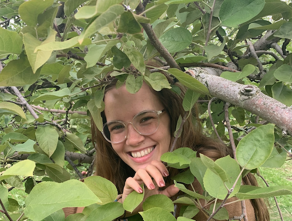

That's me! I'm the middle child in my family, I have an older and a younger sister. I also have five step siblings, all but one is younger than I am. I grew up in a small town in Central Maine. I am working towards my degree in Business Managment at the University of Maine, where I am a senior, graduating in Spring 2020. After graduation I plan to move to California and continue my travels around the country, working at different outsourced training firms, before I return to my home state to work in HR at a local bank.
This spring, I will be leading a trip to New York State, to work with the homeless population in the area. This is done through the university organization, Alternative Breaks. This is a nationally recognized organization, that, through the University of Maine, will be sending out four trips in the winter, and two in the spring. The goal of the organization is for students to spend a week of their spring or winter break doing volunteer work for a particular social issue.
Click here to learn more about my Alternative Breaks trip!